Chapter 7: Security, Spectrum & Network Operations¶
A mobile network must keep strangers out, spend its spectrum wisely and run itself around the clock. This chapter covers security from 2G to 5G — authentication, SUCI privacy, signalling protection, fake base stations, interconnect fraud, assurance schemes, SIM/eSIM and the post-quantum transition — then spectrum auctions, sharing, regulators and WRC-27, and finally how operators run networks: OSS/BSS, orchestration, SON and AIOps, testing tools and the KPIs they live by.
7.1 Security Across the Generations: 2G to 5G¶
Every mobile generation has had to answer two questions: is this really the subscriber's SIM, and can anyone listen in? 2G only checked the phone and used ciphers that are now breakable; 3G added mutual authentication so the phone also checks the network; 4G added a clean key hierarchy; 5G hides the permanent identity and lets the home network confirm every login.
Think of it like…
It is like a building's security growing up: first a guard glances at your badge (2G), then guard and visitor both show ID (3G), then every floor gets its own key (4G), and finally your name travels in a sealed envelope only head office can open (5G).
Real-world example
Ana, a security analyst at the fictional Corvo Mobile, explains to management why 2G still matters: a fake 2G cell can pull a 5G phone down, skip network authentication and ask for no encryption at all. Switching 2G off in 2027 removes the weakest link that every newer protection depends on.
How it works¶
- 2G GSM: the network sends a random challenge (RAND); the SIM uses its secret key Ki to return SRES and derive the cipher key Kc — but the phone never checks the network.
- 3G UMTS AKA: the network also sends AUTN, containing a sequence number and a MAC, so the USIM can verify the network and reject replayed challenges; keys grow to 128 bits.
- 4G EPS-AKA: keys are bound to the serving network's identity (KASME) and split into separate NAS and radio keys, using SNOW 3G, AES or ZUC.
- 5G: 5G-AKA or EAP-AKA' with home-network confirmation, the SUPI concealed as SUCI, and the service-based core protected with TLS and a SEPP at roaming borders.
- Because phones stay backwards compatible, the oldest generation a phone will still accept sets its real-world security level.
Who uses it
Telecom security engineers, mobile penetration testers, SIM and modem developers, regulators and auditors all need this history to judge risk in mixed 2G-5G networks.
Key takeaway
One-line summary for interviews: 2G = one-way authentication and weak ciphers; 3G onward = mutual authentication with 128-bit keys; 5G adds identity concealment and home-network control.
Going deeper
- Early GSM SIMs used COMP128-1 for A3/A8; a 1998 attack recovered the secret Ki after roughly 150,000 chosen challenges, enabling SIM cloning. Operators moved to COMP128-2/3 and later to AES-based Milenage.
- A5/1 protects GSM calls with a 64-bit Kc (often with 10 bits forced to zero by old SIMs); public rainbow tables released around 2009-2010 let researchers decrypt GSM traffic with commodity hardware.
- A UMTS/LTE authentication vector contains RAND, XRES, AUTN, CK and IK (LTE derives KASME from them). AUTN = (SQN ⊕ AK) || AMF || MAC, so a forged or replayed challenge fails the USIM's check.
- LTE's key hierarchy runs K → CK/IK → KASME → NAS keys and KeNB → RRC and user-plane keys; a fresh KeNB at each handover limits the damage if one base station is compromised.
- 5G extends this to K → KAUSF → KSEAF → KAMF → KgNB, using the HMAC-SHA-256 key derivation function of TS 33.220 and binding the serving network name into the keys.
- LTE never integrity-protects user-plane data, which the 2018 aLTEr research exploited; 5G NR makes user-plane integrity possible, but it is optional and policy-controlled per session.
Common mistakes & misconceptions
- Assuming 5G phones are safe from 2G attacks — if 2G is enabled, a fake 2G cell can still downgrade the phone and bypass every 5G protection.
- Equating encryption with integrity — LTE user data is ciphered but not integrity-protected, so an attacker can flip bits without detection.
- Treating SIM cloning as purely historical — old SIMs and long-lived IoT devices with weak algorithms are still in the field.
Try it: Why 64-bit keys fall and 128-bit keys do not (brute-force time at 10^12 guesses per second)¶
for bits in (54, 64, 128):
seconds = 2**bits / 1e12 / 2 # on average half the key space
print(f"{bits}-bit key: {seconds/86400/365:.3g} years")
# 54 bits ~ effective GSM Kc on SIMs that zeroed 10 bits; 128 bits ~ 3G/4G/5G
Key standards, network functions, technologies & tools¶
| Name | What it does | Example |
|---|---|---|
| A5/1 GSM (ETSI), late 1980s · Technology · Legacy · 2G |
GSM's original over-the-air stream cipher with a 64-bit key; practically breakable with precomputed tables since about 2009. | Researchers at the 2009 Chaos Communication Congress showed recorded GSM calls could be decrypted with A5/1 tables and inexpensive radios. |
| A5/2 GSM (ETSI) · Technology · Legacy · 2G |
A deliberately weakened export cipher, breakable in real time; GSMA and 3GPP had it removed from new handsets around 2006-2007. | A 2003 attack recovered A5/2 keys within seconds, and could be used to attack A5/1 calls through the same Kc. |
| A5/3 and GEA3 (KASUMI) 3GPP / ETSI SAGE · Technology · Legacy · 2G |
Stronger 2G voice and data ciphers based on the 3G KASUMI block cipher, but still limited by GSM's 64-bit key and one-way authentication. | An operator enabling A5/3 stops passive call decryption, yet a fake base station can simply request no encryption (A5/0). |
| COMP128 GSM Association (example algorithm) · Technology · Legacy · 2G |
Example A3/A8 authentication algorithm used in early GSM SIMs; version 1 leaked secret keys and allowed SIM cloning. | In 1998 researchers extracted Ki from a COMP128-1 SIM by sending about 150,000 challenges through a card reader. |
| UMTS AKA 3GPP TS 33.102 · Procedure · Legacy · 3G |
3G Authentication and Key Agreement: mutual authentication with sequence numbers, 128-bit cipher and integrity keys, and signalling integrity. | A 3G USIM rejects a challenge whose MAC is wrong, so a fake UMTS cell cannot complete authentication. |
| Milenage 3GPP TS 35.205-35.208 · Standard · Current · All |
AES-128-based algorithm set that USIMs and home networks use to compute authentication responses and keys for 3G, 4G and 5G. | A SIM vendor personalises each card with Ki and an operator-specific OPc so Milenage outputs differ per operator. |
| TUAK 3GPP TS 35.231 · Standard · Current · All |
Alternative authentication algorithm set based on Keccak (the SHA-3 family), supporting 256-bit subscriber keys. | An IoT operator worried about long device lifetimes chooses TUAK with 256-bit keys for its new eSIM profiles. |
| EPS-AKA 3GPP TS 33.401 · Procedure · Current · 4G |
4G authentication run by the MME with vectors from the HSS, producing KASME bound to the serving network identity. | When Ana's phone attaches to LTE, the MME sends RAND and AUTN, compares RES with XRES, then starts NAS security. |
| KASME key hierarchy 3GPP TS 33.401 · Concept · Current · 4G |
LTE's tree of keys derived from KASME: separate keys for NAS ciphering and integrity, RRC and user-plane protection. | After a handover, the target eNodeB receives a freshly derived KeNB, so the old cell's key cannot decrypt new traffic. |
| 128-EEA / 128-EIA algorithms 3GPP TS 33.401 / ETSI SAGE · Standard · Current · 4G |
LTE's ciphering (EEA) and integrity (EIA) algorithms: 1 = SNOW 3G, 2 = AES, 3 = ZUC; 5G reuses them as NEA/NIA. | A Chinese network often prefers ZUC-based EEA3, while most European networks negotiate AES-based EEA2. |
| Null ciphering (EEA0 / NEA0) 3GPP TS 33.401 / TS 33.501 · Concept · Current · All |
The 'no encryption' option, intended for emergency calls without a valid SIM; seeing it in normal service is a red flag. | Corvo's audit script flags any cell where Security Mode Command selects EEA0 for subscribers who are not making emergency calls. |
| Authentication vector 3GPP TS 33.102 / 33.401 / 33.501 · Concept · Current · All |
The bundle the home network generates per login: random challenge, expected response, network token AUTN and session keys. | The HSS sends an MME a batch of vectors so subscribers can re-authenticate without asking home each time. |
| SQN and AUTN replay protection 3GPP TS 33.102 · Concept · Current · All |
Sequence numbers inside AUTN let the SIM detect replayed challenges; a mismatch triggers a resynchronisation procedure. | A fake cell replaying an old recorded challenge fails, because the USIM sees an out-of-range sequence number. |
| 3GPP TS 33.401 3GPP SA3 · Standard · Current · 4G |
The LTE/EPS security architecture specification: EPS-AKA, key hierarchy, NAS and AS security, and handover key handling. | A student preparing for an LTE security interview reads clauses 6 and 7 of TS 33.401 on authentication and key handling. |
7.2 5G Authentication and SUPI/SUCI Privacy¶
When a 5G phone joins a network, it proves it holds a genuine SIM and the network proves it is genuine too. Unlike older generations, the phone never sends its permanent identity (the SUPI) in clear: it encrypts it into a one-time SUCI using the home operator's public key. The home network, not the visited one, makes the final yes/no decision.

Think of it like…
It is like posting your passport number in a sealed envelope that only your own embassy can open: the local office forwards the envelope and receives back only 'yes, this person is ours' plus a temporary visitor badge.
Real-world example
Kenji's phone, from the fictional Sakura Mobile in Japan, roams onto the fictional Lumen Telecom in Portugal and sends a fresh SUCI. Lumen's AMF forwards it through both operators' SEPPs to Sakura's AUSF and UDM, which decrypt it, run 5G-AKA and return a key for Lumen together with confirmation. Lumen then gives Kenji a temporary 5G-GUTI.
How it works¶
- The phone builds a SUCI: it encrypts the subscriber-specific part of the SUPI with ECIES using the home network public key stored on the SIM, leaving the country/network codes and routing indicator readable.
- The visited AMF (acting as SEAF) sends the SUCI to the home AUSF; the UDM's SIDF decrypts it and the ARPF creates a 5G authentication vector.
- The AUSF passes RAND and AUTN down; the USIM verifies AUTN (so the network is genuine) and answers with RES*.
- The SEAF checks a hash of the expected answer, then the home AUSF checks RES* itself, releases KSEAF and reveals the SUPI to the serving network.
- The AMF derives KAMF, runs NAS Security Mode Command and assigns a 5G-GUTI, which the phone uses instead of its permanent identity from then on.
Who uses it
Core-network security engineers, roaming and interconnect teams, SIM and eSIM vendors, and privacy auditors work with 5G authentication daily.
Key takeaway
Memorise the identifiers: SUPI = permanent ID (IMSI or NAI format), SUCI = concealed SUPI, 5G-GUTI = temporary ID; only the home network's SIDF can reverse a SUCI.
Going deeper
- SUCI protection schemes are defined in TS 33.501 Annex C: the null scheme (no protection), Profile A (X25519 with AES-128-CTR and HMAC-SHA-256) and Profile B (NIST P-256); operators may add proprietary schemes.
- The SUCI can be calculated by the USIM itself or by the phone; the operator decides through SIM files, which also store the home network public key and its key identifier.
- Home-network confirmation means the visited network only receives HXRES* (a hash), while the home AUSF checks RES* — so a visited network cannot claim fake authentications to inflate roaming bills.
- EAP-AKA' (RFC 9048) carries AKA inside EAP and binds keys to the access network name; it is used for 5G and for non-3GPP access such as Wi-Fi via an N3IWF.
- Rel-16 AKMA (TS 33.535) lets applications reuse the network authentication to obtain keys, and standalone non-public networks may authenticate with non-SIM credentials such as EAP-TLS certificates.
- Research such as formal analyses of 5G-AKA (e.g. with the Tamarin prover) found linkability issues around sequence-number failures, which explains why 3GPP keeps refining these procedures.
Common mistakes & misconceptions
- Thinking SUCI makes tracking impossible — with the null scheme, or after a fallback to 2G/4G, identities can still leak, and other signals can link a device's sessions.
- Confusing SUPI and SUCI — the SUPI is permanent and secret; a new SUCI is produced each time the phone must reveal its identity.
- Assuming the visited network authenticates roamers on its own — in 5G the home network makes the final decision.
Try it: Toy demo of the idea behind SUCI Profile A: an X25519 key agreement between a SIM and its home network (not the full 3GPP format)¶
# pip install cryptography
from cryptography.hazmat.primitives.asymmetric.x25519 import X25519PrivateKey
home_priv = X25519PrivateKey.generate() # stays in the home network's SIDF
home_pub = home_priv.public_key() # provisioned on the SIM
eph = X25519PrivateKey.generate() # fresh ephemeral key for each SUCI
ue_secret = eph.exchange(home_pub)
home_secret = home_priv.exchange(eph.public_key())
print(ue_secret == home_secret) # True: both derive the same key for AES-CTR + HMAC
Key standards, network functions, technologies & tools¶
| Name | What it does | Example |
|---|---|---|
| ECIES Profile A 3GPP TS 33.501 Annex C · Standard · Current · 5G |
SUCI encryption scheme using X25519 key agreement, AES-128-CTR encryption and HMAC-SHA-256 integrity. | Most operators launching 5G standalone provisioned Profile A keys on their new SIMs for identity concealment. |
| ECIES Profile B 3GPP TS 33.501 Annex C · Standard · Current · 5G |
SUCI encryption scheme using the NIST secp256r1 (P-256) curve, preferred where certified NIST curves are required. | A government-run private 5G network chooses Profile B to align with its national cryptography rules. |
| Null protection scheme 3GPP TS 33.501 · Concept · Current · 5G |
A SUCI 'scheme' that leaves the SUPI unencrypted; allowed for emergency sessions or when no home key is provisioned. | Corvo's audit finds 3% of old SIMs still use the null scheme, so it schedules eSIM profile updates. |
| Home network public key 3GPP TS 33.501 / TS 31.102 · Concept · Current · 5G |
The operator's public key (with a key identifier) stored on the USIM so phones can conceal their SUPI. | When Sakura Mobile rotates its key pair, it updates SIMs over the air and keeps the old private key until migration ends. |
| Routing indicator 3GPP TS 23.003 · Concept · Current · 5G |
Up to four digits left readable in the SUCI that tell the network which home UDM instance should handle the subscriber. | Sakura uses routing indicator 0012 for IoT SIMs so their authentications reach a dedicated UDM cluster. |
| ARPF 3GPP TS 33.501 · Network function · Current · 5G |
Authentication credential Repository and Processing Function in the UDM that stores long-term keys and builds authentication vectors. | The ARPF selects 5G-AKA or EAP-AKA' based on subscription data and creates the vector for the AUSF. |
| AUSF (security role) 3GPP TS 33.501 · Network function · Current · 5G |
The home Authentication Server Function that verifies RES*, holds KAUSF and confirms authentication to the visited network. | When a roaming subscriber's RES* does not match, Sakura's AUSF rejects the login and Lumen never learns the SUPI. |
| SEAF 3GPP TS 33.501 · Network function · Current · 5G |
Security Anchor Function, co-located with the AMF in the serving network, which receives KSEAF and anchors NAS security. | Lumen's AMF/SEAF derives KAMF from KSEAF and uses it to protect all NAS messages with Kenji's phone. |
| AKMA 3GPP TS 33.535 · Procedure · Emerging · 5G |
Authentication and Key Management for Applications: reuses the 5G login to give apps keys without separate passwords. | A smart-meter app obtains an application key derived from the device's network authentication, avoiding stored passwords. |
| Home-network confirmation 3GPP TS 33.501 · Concept · Current · 5G |
The home AUSF verifies RES* itself while the visited network checks only a hash (HXRES*), so visited networks cannot fake authentications. | Lumen cannot bill Sakura for Kenji's roaming session unless Sakura's AUSF confirmed his RES*. |
| 5G key hierarchy (KAUSF to KAMF) 3GPP TS 33.501 · Concept · Current · 5G |
Chain of keys from the SIM key K through KAUSF, KSEAF and KAMF down to NAS and radio keys. | After Kenji's phone moves to a new AMF, a fresh KAMF is derived so the old AMF's key is useless. |
| Serving network name binding 3GPP TS 33.501 · Concept · Current · 5G |
The serving network's name is mixed into key derivation, so keys made for one network cannot be reused in another. | Keys leaked from a rogue visited network cannot be replayed to impersonate Lumen towards Kenji's phone. |
| SUCI calculation location (USIM or phone) 3GPP TS 31.102 / TS 33.501 · Concept · Current · 5G |
Operator setting in SIM files that decides whether the SIM card or the phone computes the SUCI. | Sakura's older SIMs let the phone compute the SUCI; its new SIMs do it on-card for stronger isolation. |
| Certificate-based access for private 5G (EAP-TLS) 3GPP TS 33.501 (standalone non-public networks) · Procedure · Current · 5G |
Private standalone 5G networks may authenticate devices with certificates via EAP-TLS instead of SIM-based AKA. | A factory's private 5G network admits robots using certificates from the company's own certificate authority. |
7.3 Protecting Signalling, User Data and the Service-Based Core¶
After authentication, three protection layers start. NAS security protects messages between the phone and the core's AMF; AS security protects radio signalling and user data between the phone and the base station; and inside the core, network functions talk over HTTPS with mutual TLS and OAuth tokens. At borders between operators, a SEPP guards roaming traffic.
Think of it like…
Think of a bank: an armoured van for cash on the street (AS), sealed letters to head office (NAS), staff badges and room keys inside the building (TLS and OAuth), and a guarded loading dock where other banks deliver (the SEPP).
Real-world example
At the fictional Nordlys Telecom, engineer Siri sets user-plane integrity to 'required' for the slice serving a power-grid customer, issues mTLS certificates to every core network function, and lets the NRF issue OAuth tokens — so a compromised pod without a valid token cannot query the UDM.
How it works¶
- The AMF sends a NAS Security Mode Command choosing algorithms (for example NEA2/NIA2); from then on NAS messages are ciphered and integrity-protected with keys derived from KAMF.
- The gNB sends an RRC Security Mode Command; RRC signalling is ciphered and integrity-protected, user data is ciphered in PDCP, and user-plane integrity is added if the session policy requires it.
- Core network functions register with the NRF; a consumer obtains an OAuth 2.0 access token and calls the producer over HTTP/2 with mutual TLS.
- Links between sites and from gNBs to the core (N2, N3) are protected with IPsec under the NDS/IP framework.
- Roaming signalling flows SEPP-to-SEPP over N32: N32-c negotiates the security, and N32-f carries the messages with TLS or application-layer protection.
Who uses it
Core and RAN security engineers, PKI administrators, roaming and interconnect teams, and cloud security teams who operate cloud-native 5G cores.
Key takeaway
Keep the split straight: NAS = phone↔AMF, AS = phone↔gNB; inside the core, mTLS authenticates network functions and OAuth 2.0 tokens authorise what they may call.
Going deeper
- NAS and AS security each negotiate algorithms with a Security Mode Command; NIA0 (null integrity) is only permitted for unauthenticated emergency sessions, so any other use is an audit finding.
- COUNT values (NAS COUNT, PDCP COUNT) feed into every ciphering and integrity operation to prevent replay; when a COUNT is about to wrap around, keys must be refreshed.
- User-plane integrity in NR is controlled per PDU session by the SMF's policy (required, preferred or not needed), so a utility or URLLC slice can demand it while video slices skip it.
- SBI security (TS 33.501 clause 13) uses TLS 1.2/1.3 with mutual certificates between NFs; access tokens are JWTs signed by the NRF and scoped to NF types and service operations.
- The SEPP provides topology hiding and message filtering. N32-f can use TLS end to end, or PRINS, which protects selected fields with JWE/JWS so IPX providers may change only permitted parts.
- Later releases added indirect communication through a Service Communication Proxy (SCP) with delegated authorisation, and certificate profiles that bind NF instance IDs into certificates.
Common mistakes & misconceptions
- Leaving the internal SBA on plain HTTP because it is 'inside the cloud' — one compromised container could then query subscriber data freely.
- Assuming user-plane integrity is always on — in many networks it is 'preferred' or 'not needed' and must be explicitly required for sensitive slices.
- Treating the SEPP as just a firewall — it also hides topology, enforces message rules and manages N32 security.
Try it: Find 5G security-mode messages in a capture with Wireshark's command-line tool¶
# 5GMM message type 0x5d = Security mode command, 0x5e = Security mode complete
tshark -r lab_5g.pcapng -Y "nas-5gs.mm.message_type == 0x5d || nas-5gs.mm.message_type == 0x5e"
# NGAP signalling between gNB and AMF
tshark -r lab_5g.pcapng -Y ngap -T fields -e frame.number -e _ws.col.Info
Key standards, network functions, technologies & tools¶
| Name | What it does | Example |
|---|---|---|
| NAS security 3GPP TS 33.501 / TS 24.501 · Concept · Current · 5G |
Ciphering and integrity protection of signalling between the phone and the AMF, using keys derived from KAMF. | A registration update message altered in transit fails its NAS integrity check, and the AMF discards it. |
| AS security 3GPP TS 33.501 / TS 38.331 · Concept · Current · 5G |
Protection of radio signalling (RRC) and user data (PDCP) between the phone and the gNB, using keys derived from KgNB. | After RRC Security Mode Complete, all RRC reconfiguration messages to Siri's phone are ciphered and integrity-protected. |
| NEA / NIA algorithms 3GPP TS 33.501 Annex D · Standard · Current · 5G |
5G's ciphering (NEA1-3) and integrity (NIA1-3) algorithms based on SNOW 3G, AES and ZUC, with 128-bit keys. | Nordlys configures preference order NEA2 > NEA1 > NEA3 and checks that NEA0 is never chosen for normal subscribers. |
| Security Mode Command 3GPP TS 24.501 / TS 38.331 · Procedure · Current · All |
The message by which the network selects security algorithms and starts protection, at NAS and at RRC level. | In a lab capture, the NAS Security Mode Command shows the algorithms chosen and the replayed UE security capabilities. |
| User-plane integrity policy 3GPP TS 33.501 · Concept · Current · 5G |
Per-PDU-session setting (required, preferred, not needed) that decides whether user data gets integrity protection in NR. | Siri marks the grid-control slice 'required', so a gNB that cannot support integrity must reject that session. |
| PDCP ciphering 3GPP TS 38.323 · Protocol · Current · 5G |
The PDCP layer encrypts user data and integrity-protects signalling (and optionally data) on the radio link. | A protocol engineer decoding PDCP in a lab uses test keys because live radio traffic is ciphered. |
| Mutual TLS on the SBI 3GPP TS 33.501 / 33.210 · Protocol · Current · 5G |
Both client and server network functions present certificates when connecting over HTTP/2, so each proves its identity. | The SMF rejects a connection from a pod whose certificate was not issued by Nordlys's internal certificate authority. |
| OAuth 2.0 access tokens 3GPP TS 33.501 / IETF RFC 6749 · Protocol · Current · 5G |
The NRF issues signed tokens saying which NF type may call which service; producers check tokens before answering. | An NEF with a token scoped to event exposure cannot call UDM subscriber-data services and gets HTTP 403. |
| Service Communication Proxy (SCP) 3GPP TS 23.501 / 33.501 · Network function · Current · 5G |
Optional proxy that routes SBI messages between NFs and can obtain tokens on their behalf (indirect communication). | Nordlys deploys an SCP so hundreds of NF instances discover and reach each other through one controlled layer. |
| SEPP (security role) 3GPP TS 33.501 · Network function · Current · 5G |
Security Edge Protection Proxy at each operator's border that filters, protects and hides internal topology for roaming signalling. | Lumen's SEPP blocks a message from a partner that tries to query a subscriber the partner is not serving. |
| NDS/IP and IPsec 3GPP TS 33.210 · Standard · Current · All |
Network Domain Security framework that protects IP links between network elements and sites, usually with IPsec gateways. | Every rural gNB's N2 and N3 traffic passes through an IPsec tunnel to a security gateway at the core site. |
| Zero trust for 5G cores CISA/NSA 5G cloud guidance; NIST SP 800-207 · Concept · Emerging · 5G |
Design approach that trusts no component by default: authenticate every call, minimise privileges, segment and monitor continuously. | Nordlys isolates each NF namespace, enforces mTLS everywhere and alerts when a pod calls an unusual service. |
7.4 Fake Base Stations, IMSI Catchers and Radio Attacks¶
A fake base station is a radio pretending to be a real cell tower. Phones latch on to the strongest suitable cell, so an attacker with a cheap software-defined radio can lure nearby phones, learn their identities, push them down to insecure 2G, or blast scam text messages. 5G closes several holes, but only if older generations are switched off or blocked on the phone.

Think of it like…
It is like a fake cash-machine front glued over a real one: it looks official, catches anyone who uses it, and the only defence is noticing something is subtly wrong.
Real-world example
In the fictional town of Port Alder, police stop a car carrying an 'SMS blaster' — a fake 2G cell that pulled thousands of phones off their real networks and sent bank-phishing texts. Corvo Mobile's analytics had already flagged unknown cell IDs appearing in phones' measurement reports along the car's route.
How it works¶
- The attacker broadcasts a cell with a real operator's network code, a strong signal and a new tracking area code.
- Nearby phones reselect to it and try to update their location, giving the fake cell a chance to talk to them.
- In 2G and LTE the fake cell can send an Identity Request and receive the IMSI in clear, or send reject/redirect messages that push the phone to 2G.
- On 2G it can switch off encryption (A5/0), intercept SMS and calls, or inject spam; on LTE and 5G it is mostly limited to tracking and denial of service.
- Defences include SUCI in 5G, disabling 2G on phones, network-side detection from measurement reports, and alerts on suspicious signalling.
Who uses it
Mobile security researchers, law enforcement and civil-liberties groups, operator fraud and RAN security teams, and modem and smartphone OS developers.
Key takeaway
Root cause to remember: messages sent before security is activated — broadcast system information, paging, identity requests and reject messages — are not authenticated in LTE or 5G.
Going deeper
- Unprotected LTE reject messages, such as a Tracking Area Update Reject with cause 'LTE not allowed', can push phones to 2G/3G for long periods — demonstrated in 2016 academic work on LTE identity and downgrade attacks.
- aLTEr (2018) showed that LTE's lack of user-plane integrity let a man-in-the-middle relay redirect DNS traffic; ReVoLTE (2020) recovered VoLTE audio where base stations reused keystreams.
- SMS blasters — portable fake 2G cells — were used for mass phishing in several countries in 2024-2025, with arrests reported in places including Thailand and the United Kingdom.
- 3GPP studied fake-base-station detection and resilience (TR 33.809); networks can compare phones' neighbour-cell measurement reports against the planned cell list to spot intruders.
- Android 12 added a user toggle to disable 2G, Android 14 added enterprise controls and an option to refuse null ciphering, and newer Android versions on supported devices can warn about identifier requests.
- The Electronic Frontier Foundation released Rayhunter in 2025: open-source software for an inexpensive mobile hotspot that analyses its modem's signalling for signs of IMSI catchers.
Common mistakes & misconceptions
- Believing 5G standalone stops all fake cells — SUCI prevents IMSI leaks, but unauthenticated broadcast and reject messages still enable denial of service and some tracking.
- Trusting ordinary 'IMSI catcher detector' apps — without low-level modem access most apps can only guess; use purpose-built tools for real investigations.
- Assuming only governments run IMSI catchers — software-defined radios and open-source stacks put them within reach of criminals.
Try it: Reduce your own phone's exposure to fake 2G cells (Android) and peek at its serving cell¶
# Android 12+ on many devices: Settings > Network & internet > SIMs > turn OFF 'Allow 2G'
# iPhone: Lockdown Mode (iOS 17+) also disables 2G
# With USB debugging enabled on your own phone:
adb shell dumpsys telephony.registry | grep -i -m5 "mServiceState"
Key standards, network functions, technologies & tools¶
| Name | What it does | Example |
|---|---|---|
| IMSI catcher Various (law enforcement and criminal use) · Equipment · Current · All |
A fake base station that tricks phones into connecting so it can collect identities, track location or intercept 2G traffic. | An investigative journalist finds unusual 2G cells near a protest site, consistent with an IMSI catcher collecting attendees' identities. |
| StingRay Harris Corporation (now L3Harris) · Equipment · Legacy · All |
Well-known family of cell-site simulators sold to US law-enforcement agencies, which made 'stingray' a generic term. | US court cases revealed police used StingRay devices to locate suspects' phones, sparking warrant-requirement debates. |
| SMS blaster Criminal use of fake 2G cells · Equipment · Current · 2G |
A portable fake 2G cell that pulls nearby phones off their network and sends them phishing SMS directly, bypassing operator spam filters. | A van circling a city centre sends 'your parcel is held' texts to every phone within a few hundred metres. |
| 2G downgrade attack Academic research · Concept · Current · All |
Forcing a phone from 4G/5G to 2G — via jamming, rejects or redirects — to exploit GSM's lack of network authentication. | Disabling 2G on a phone defeats the attack because the phone refuses to camp on the fake 2G cell. |
| Identity Request exposure 3GPP TS 24.301 / TS 24.501 · Concept · Current · 4G |
Before security is set up, LTE phones answer an Identity Request with their IMSI; 5G phones answer with a SUCI instead. | A fake LTE cell logs every passing phone's IMSI; the same trick against a 5G SA phone yields only one-time SUCIs. |
| Unauthenticated reject messages 3GPP TS 24.301 / TS 24.501 · Concept · Current · All |
Reject messages accepted before security activation, letting a fake cell deny service or block 4G/5G on a phone. | A fake cell sends 'service not allowed', and the phone stops trying that network until it is rebooted. |
| aLTEr attack Ruhr-University Bochum / NYU Abu Dhabi research (2018) · Concept · Current · 4G |
Layer-2 attack that exploits missing LTE user-plane integrity to modify encrypted traffic, such as redirecting DNS queries. | Researchers redirected a test phone's DNS lookup to a malicious server without breaking LTE encryption. |
| ReVoLTE attack Ruhr-University Bochum research (2020) · Concept · Current · 4G |
Exploited base stations that reused keystreams within a VoLTE call, letting attackers decrypt recorded calls. | After disclosure, affected vendors patched their eNodeBs to use fresh keystreams for each bearer. |
| Paging and linkability attacks Academic research · Concept · Current · All |
Using paging messages or temporary IDs to confirm a specific person's presence in an area, even without learning the IMSI. | An attacker sends messages to a target's number and watches which paging IDs appear to confirm they are nearby. |
| RF jamming Illegal in most countries · Concept · Current · All |
Deliberately transmitting noise to block radio reception, often used to force phones onto a fake or older network. | Corvo's RAN team traces a sudden uplink noise rise at one site to an illegal jammer in a parked car. |
| 3GPP TR 33.809 3GPP SA3 · Standard · Emerging · 5G |
Technical report studying 5G protections against fake base stations, including detection methods and signed system information ideas. | Security students read TR 33.809 to compare proposed defences such as digitally signed broadcast messages. |
| Android 2G toggle and null-cipher control Google Android · Software · Current · All |
Settings that let users or enterprises disable 2G and refuse unencrypted connections on supported Android devices. | A journalist's Pixel is set to block 2G and null ciphers, so fake 2G cells cannot capture it. |
| iOS Lockdown Mode Apple iOS · Software · Current · All |
Extreme-protection mode that, from iOS 17, also stops the iPhone from connecting to 2G networks. | A human-rights lawyer enables Lockdown Mode before travelling, reducing exposure to fake 2G cells. |
| Rayhunter Electronic Frontier Foundation (2025) · Tool · Current · 4G |
Open-source IMSI-catcher detector that runs on an inexpensive mobile hotspot and analyses its modem's signalling for suspicious events. | Activists carry Rayhunter hotspots at a rally and later review logs for identity requests and downgrades. |
| SnoopSnitch SRLabs · Tool · Legacy · All |
Android app for rooted Qualcomm phones that analysed modem traffic for IMSI catchers and missing security patches. | Researchers used SnoopSnitch around 2015-2018 to map networks with weak encryption settings. |
7.5 Signalling, Interconnect and Subscriber Fraud Attacks¶
Operators trust each other through global signalling networks: SS7 for 2G/3G, Diameter for 4G and GTP for roaming data. These were built for a small club of trusted operators, so anyone who rents access can ask for a subscriber's location or redirect their text messages. Add SIM swaps, signalling storms and state-sponsored intrusions, and the core becomes a prime target.
Think of it like…
It is like a hotel switchboard where anyone who rings and says 'this is reception' can ask which room a guest is in — nobody checks who reception really is.
Real-world example
Fraudsters take over Lena's number at the fictional Brightwave by persuading a store clerk to issue a replacement SIM, then receive her bank's one-time codes. Afterwards Brightwave requires in-app approval for SIM changes, and Lena's bank checks a SIM-swap API before trusting SMS codes.
How it works¶
- An attacker gains SS7 or Diameter access through a rogue, careless or compromised interconnect partner.
- They send a query such as MAP AnyTimeInterrogation (SS7) or a Diameter Insert-Subscriber-Data/Update-Location to locate or reroute a subscriber.
- Without filtering, the home network answers or updates its records as if the request were legitimate.
- The attacker tracks location, intercepts SMS one-time codes or commits billing fraud.
- Defences: signalling firewalls following GSMA FS.11/FS.19/FS.20, SMS home routing, SEPPs in 5G, SIM-swap controls and continuous monitoring.
Who uses it
Interconnect and roaming security teams, fraud analysts, banks relying on SMS codes, and national cybersecurity agencies.
Key takeaway
Map attacks to protocols: SS7 MAP (2G/3G), Diameter S6a (4G), GTP-C (data roaming) and HTTP/2 through SEPPs (5G).
Going deeper
- SS7 MAP messages such as SendRoutingInfoForSM and AnyTimeInterrogation can reveal the IMSI, serving switch and cell; GSMA FS.11 groups messages into categories, e.g. category 1 should never arrive from another network.
- Diameter on S6a/S6d (TS 29.272) replaced MAP for LTE roaming but kept the same trust model; GSMA FS.19 describes Diameter interconnect security and firewall rules.
- GTP-C on roaming interfaces (S8, Gp) can be abused to create or delete sessions and hijack data roaming; GSMA FS.20 covers GTP security and firewalls.
- Salt Typhoon, a China-linked group, compromised several major US telecom operators in 2024, reaching call records and lawful-intercept systems; US agencies issued joint hardening guidance in December 2024.
- In November 2023 the FCC adopted rules requiring US carriers to use secure customer authentication before SIM changes and number port-outs, and to notify customers of such requests.
- Signalling storms occur when many devices (often IoT) reconnect at once after an outage or bug; back-off timers, access barring and AMF/MME overload control limit the damage.
Common mistakes & misconceptions
- Assuming 5G ends SS7 risk — networks still use SS7 and Diameter for 2G-4G roaming and SMS, so legacy interfaces stay exposed for years.
- Treating SMS one-time codes as strong authentication — SIM swap and SS7 interception make SMS a weak second factor; prefer app-based or hardware keys.
- Ignoring IoT in capacity planning — synchronised reconnections from cheap devices can overload a core network.
Try it: List signalling protocols present in a roaming test capture¶
tshark -r roaming_lab.pcap -Y "gsm_map || diameter || gtpv2 || gtp" \
-T fields -e frame.time_relative -e _ws.col.Protocol -e _ws.col.Info | head -40
Key standards, network functions, technologies & tools¶
| Name | What it does | Example |
|---|---|---|
| SS7 attack surface ITU-T SS7 / 3GPP TS 29.002 (MAP) · Protocol · Legacy · All |
SS7 and its MAP application trust any connected operator, enabling location tracking, SMS interception and fraud when unfiltered. | A tracking company with leased SS7 access locates a target phone to within one cell, anywhere in the world. |
| AnyTimeInterrogation (ATI) 3GPP TS 29.002 · Protocol · Legacy · All |
MAP message that asks the HLR for a subscriber's current state and location; abused for tracking. | Brightwave's firewall blocks ATI messages arriving from outside its own network, as GSMA guidance recommends. |
| SMS interception via SS7 Security research · Concept · Legacy · All |
Registering a fake serving switch for a subscriber so their incoming SMS, including bank codes, is delivered to the attacker. | In 2017 German banks reported customers' accounts drained after attackers redirected SMS one-time codes through SS7. |
| Diameter S6a attacks 3GPP TS 29.272 · Protocol · Current · 4G |
Abuse of LTE roaming signalling (Update-Location, Insert-Subscriber-Data) for tracking, denial of service or fraud. | A Diameter firewall drops an Insert-Subscriber-Data request from a partner that is not serving the subscriber. |
| GTP-C attacks 3GPP TS 29.274 · Protocol · Current · All |
Forged GTP control messages that create, modify or delete roaming data sessions to steal service or hijack traffic. | A GTP firewall rejects Create-Session requests from an IP range that is not in the roaming partner's agreement. |
| Signalling firewall Vendors such as Mobileum, Enea, Cellusys · Equipment · Current · All |
Interconnect firewall that inspects SS7, Diameter and GTP messages and blocks those violating GSMA rules or roaming context. | Brightwave's firewall flags a burst of location queries for one VIP number from an unexpected country. |
| GSMA FS.11 GSMA · Standard · Current · All |
GSMA guidance on SS7 interconnect security, classifying MAP messages and recommending monitoring and filtering. | An auditor checks that all category 1 SS7 messages from external networks are blocked, as FS.11 recommends. |
| GSMA FS.19 GSMA · Standard · Current · 4G |
GSMA guidance on Diameter interconnect security and firewall controls for LTE roaming. | Brightwave's roaming team uses FS.19 to define rules for which Diameter commands each partner may send. |
| GSMA FS.20 GSMA · Standard · Current · All |
GSMA guidance on GTP security for roaming data, including GTP firewall functions. | A new IoT roaming deal triggers a GTP firewall review based on FS.20 checks. |
| SMS home routing 3GPP TR 23.840 / GSMA · Technology · Current · All |
Routes incoming SMS signalling through the home network's SMS router so the real IMSI and location are not revealed to queriers. | With home routing enabled, an SS7 SendRoutingInfoForSM query returns a fake IMSI and the router's address. |
| SIM swap fraud Fraud technique · Concept · Current · All |
Criminals persuade or bribe an operator to move a victim's number to a new SIM or eSIM they control. | After a SIM swap, a crypto investor's exchange account is emptied using SMS password-reset codes. |
| FCC SIM-swap and port-out rules US FCC (adopted November 2023) · Regulation · Current · All |
Rules requiring US carriers to authenticate customers securely before SIM changes or port-outs and to notify them. | A US carrier now sends an in-app alert and waits for approval before activating a replacement SIM. |
| Signalling storm Operations risk · Concept · Current · All |
A sudden flood of signalling (e.g., mass reconnections) that overloads core functions and causes wider outages. | After a power cut, 200,000 smart meters re-register simultaneously until back-off timers spread them out. |
| Salt Typhoon China-linked threat actor (reported 2024) · Concept · Current · All |
State-sponsored group that breached major US telecom operators, accessing call records and lawful-intercept systems. | The incident pushed US operators to harden routers, rotate credentials and segment management networks in 2025. |
7.6 Security Assurance, Supply Chain and Telecom Security Law¶
Operators buy equipment from a handful of vendors and run software they did not write, so they need evidence that it is secure. 3GPP's SCAS specifications list security tests per network function, GSMA's NESAS audits how vendors develop products and accredits test labs, and governments add laws on minimum security and on which suppliers may be used.

Think of it like…
It is like food safety: recipes must meet standards (SCAS), kitchens are inspected (NESAS audits), accredited labs test samples, and regulators can ban risky suppliers.
Real-world example
The fictional Meridian Telecom tenders for a new 5G core. It asks bidders for NESAS-audited development processes, SCAS test reports for the AMF, SMF and UPF from an accredited lab, and an SBOM for each container — and checks no bidder is on its government's high-risk list.
How it works¶
- 3GPP SA3 writes SCAS specifications: TS 33.117 for general requirements plus a 33.5xx document per network function.
- The vendor's development and product-lifecycle processes are audited against GSMA NESAS requirements.
- An ISO/IEC 17025-accredited lab tests the product against the relevant SCAS and writes an evaluation report.
- The operator or a national authority reviews the evidence; national laws may add requirements or exclude suppliers.
- New software versions trigger re-testing, and NESAS process audits repeat periodically.
Who uses it
Vendor product-security teams, test-lab engineers, operator procurement and assurance teams, and national regulators.
Key takeaway
SCAS says what to test on a product; NESAS covers how the vendor builds it and who is qualified to test it.
Going deeper
- TS 33.117 covers generic requirements such as account handling, logging, OS and web-server hardening; NF-specific SCAS documents include TS 33.511 (gNB), 33.512 (AMF), 33.513 (UPF), 33.514 (UDM), 33.515 (SMF), 33.516 (AUSF), 33.517 (SEPP), 33.518 (NRF) and 33.519 (NEF).
- NESAS is described in GSMA FS.13 with companion documents covering lab accreditation, evaluation methodology and vendor development and lifecycle requirements; Germany's BSI runs a NESAS-based certification scheme for critical components.
- The UK Telecommunications (Security) Act 2021 and its 2022 Code of Practice set phased security measures for providers, and Huawei equipment must be removed from UK 5G networks by the end of 2027.
- The EU 5G Toolbox (2020) asks member states to assess supplier risk; the European Commission said in 2023 that Huawei and ZTE present materially higher risks, and the NIS2 Directive (applying from October 2024) covers telecom providers.
- In the US, the FCC Covered List blocks new equipment authorisations for Huawei, ZTE and others; the 'rip and replace' reimbursement programme received about $3.08 billion of extra funding in December 2024.
- Cloud-native cores add software-supply-chain duties: software bills of materials (SBOMs), signed container images and vulnerability tracking across thousands of open-source components.
Common mistakes & misconceptions
- Treating a NESAS audit as product certification — it assesses processes; you still need product tests against SCAS.
- Assuming compliance equals security — SCAS tests baseline hygiene, not every configuration error or zero-day vulnerability.
- Forgetting open-source dependencies — a CNF can be SCAS-tested yet ship a vulnerable library months later without SBOM tracking.
Key standards, network functions, technologies & tools¶
| Name | What it does | Example |
|---|---|---|
| 3GPP SCAS 3GPP SA3 (TS 33.117, TS 33.5xx) · Standard · Current · 5G |
Security Assurance Specifications: requirements and test cases that network products must pass, per network function. | Meridian's tender requires SCAS reports for each core function before any equipment goes live. |
| TS 33.117 3GPP SA3 · Standard · Current · All |
Catalogue of general security assurance requirements for any network product: accounts, logging, hardening and protocols. | A lab checks that a UPF has no default passwords and disables unused services, per TS 33.117 tests. |
| TS 33.511 (gNB SCAS) 3GPP SA3 · Standard · Current · 5G |
Security assurance requirements and tests specific to 5G base stations, such as RRC and user-plane protection checks. | A test lab verifies that a gNB rejects RRC messages that fail integrity checks. |
| TS 33.512 / 33.513 (AMF and UPF SCAS) 3GPP SA3 · Standard · Current · 5G |
Product-specific security tests for the AMF (NAS security, identifiers) and the UPF (user-plane and N4 handling). | Meridian's lab confirms its AMF never accepts NAS messages without integrity protection after security setup. |
| GSMA NESAS GSMA (FS.13 and companion documents) · Certification · Current · All |
Network Equipment Security Assurance Scheme: audits vendor development processes and accredits labs that test products against SCAS. | A vendor publishes its NESAS audit summary to speed up security approval with European operators. |
| NESAS security test laboratory GSMA-recognised, ISO/IEC 17025 accredited · Organisation · Current · All |
Independent lab accredited to evaluate network products against 3GPP SCAS within the NESAS scheme. | An accredited lab in Germany issues an evaluation report for a vendor's 5G core release. |
| EU 5G Toolbox EU NIS Cooperation Group (2020) · Regulation · Current · 5G |
EU set of measures for 5G security, including supplier risk assessments and restrictions on high-risk vendors. | A member state uses the Toolbox to exclude high-risk vendors from its core network and sensitive sites. |
| NIS2 Directive European Union (applies from October 2024) · Regulation · Current · All |
EU cybersecurity law covering telecom providers with risk-management duties, incident reporting and management accountability. | Meridian must report significant incidents to its national authority within 24 hours under NIS2. |
| EU5G certification scheme ENISA (draft) · Certification · Emerging · 5G |
Planned EU cybersecurity certification scheme for 5G networks under the Cybersecurity Act, building on SCAS and NESAS. | Operators follow ENISA's work to see whether future procurement will require EU-certified 5G products. |
| UK Telecommunications (Security) Act 2021 UK Parliament / Ofcom enforcement · Regulation · Current · All |
UK law imposing security duties on providers, with a Code of Practice and powers to restrict high-risk vendors. | A UK operator schedules Huawei equipment removal from its 5G network ahead of the 2027 deadline. |
| Rip and replace programme US FCC Secure and Trusted Communications Networks Reimbursement Program · Regulation · Current · All |
Funds small US carriers to remove Huawei and ZTE equipment and replace it with trusted alternatives. | A rural carrier in Wyoming replaces its Huawei RAN using reimbursement funds released after the 2024 funding top-up. |
| SBOM NTIA / CISA guidance; SPDX and CycloneDX formats · Concept · Current · All |
Software Bill of Materials: a machine-readable list of every component inside a software product. | When a critical OpenSSL flaw appears, Meridian searches its SBOMs to find affected core functions in minutes. |
| Telecom Security Code of Practice UK DSIT (2022) · Regulation · Current · All |
Detailed UK guidance with tiered measures and deadlines for implementing the Telecommunications (Security) Act. | A tier 1 UK provider maps each Code of Practice measure to an internal control and an audit date. |
7.7 SIM, eSIM and iSIM¶
A SIM is a tiny secure computer that stores your subscriber identity and secret key and performs authentication. An eSIM keeps that secure chip soldered inside the device and downloads operator 'profiles' over the internet; an iSIM goes further, building the secure element into the main chipset. All three run the same USIM logic towards the network.
Removable SIM vs eSIM vs iSIM
| Removable SIM | eSIM (eUICC) | iSIM (integrated) | |
|---|---|---|---|
| Hardware | Card: 2FF/3FF/4FF nano | Chip soldered (e.g. MFF2) | Secure enclave inside SoC |
| Change operator | Swap the card | Download a profile | Download a profile |
| Key specs | ETSI TS 102 221, 3GPP TS 31.102 | GSMA SGP.22 / SGP.32 | GSMA SGP.32 + ETSI SSP |
| Board space | Tray and reader | About 5 × 6 mm chip | Almost none |
| Typical use | Phones, legacy IoT | Phones, watches, cars | Tiny IoT, wearables |
All three run the same USIM authentication; what changes is the hardware and how profiles arrive.
Think of it like…
A removable SIM is a house key you swap by hand; an eSIM is a smart lock that accepts new digital keys sent by the landlord; an iSIM is the smart lock built into the door itself.
Real-world example
Maya lands in Seoul, scans a QR code from a travel-eSIM provider and downloads a second profile from the provider's SM-DP+ server. She switches mobile data to the new profile while keeping her home number active for calls — no plastic card, no shop visit.
How it works¶
- The operator creates a profile (IMSI, Ki/OPc, settings, applets) and stores it encrypted on its SM-DP+ server.
- The user scans an activation code or an app triggers download; the phone's LPA connects to the SM-DP+ and both authenticate with GSMA-rooted certificates.
- The profile is encrypted for that specific eUICC (identified by its EID), downloaded and installed.
- The user enables the profile; the USIM application inside authenticates to the network exactly like a plastic SIM.
- For IoT devices without screens, SGP.32 lets an eSIM IoT Manager (eIM) download and switch profiles remotely for whole fleets.
Who uses it
Device makers, operator SIM and eSIM teams, IoT fleet managers, MVNOs and travel-eSIM providers, and SIM-security evaluators.
Key takeaway
Know the specs: SGP.22 = consumer eSIM, SGP.32 = IoT eSIM (successor to M2M SGP.02); and the parts: SM-DP+, SM-DS, LPA, eIM, IPA, EID.
Going deeper
- A SIM is a UICC (ETSI TS 102 221) running applications such as the USIM (3GPP TS 31.102) and ISIM for IMS; the secrets Ki and OPc never leave the card, which computes Milenage or TUAK internally.
- SGP.22 version 3 added Multiple Enabled Profiles (MEP), letting one eUICC run two operator profiles at the same time for dual-SIM phones.
- SGP.32, first published in 2023, replaces the SM-SR-based M2M architecture (SGP.01/02) with an eSIM IoT Manager (eIM) and an IoT Profile Assistant (IPA) designed for constrained devices such as NB-IoT meters.
- Trust is anchored in GSMA's eSIM Certificate Issuer PKI: eUICCs carry manufacturer certificates, and SM-DP+ operators need GSMA-compliant certificates and SAS accreditation for their data centres.
- iSIM places an integrated eUICC in a tamper-resistant secure enclave on the main SoC, often built on ETSI's Smart Secure Platform (TS 103 666), saving cost, space and power in small IoT devices.
- Apple dropped the SIM tray from US iPhone 14 models in 2022, and the 2025 iPhone line extended eSIM-only models to more countries, pushing operators to support fully digital activation.
Common mistakes & misconceptions
- Thinking eSIM prevents SIM swap — an attacker who socially engineers a new activation code gets the same result as with a plastic SIM.
- Confusing EID and IMEI — the EID identifies the eUICC chip; the IMEI identifies the device's radio.
- Assuming IoT devices can use consumer SGP.22 — headless devices need SGP.32 (or legacy SGP.02) because nobody can scan a QR code.
Try it: Inspect cellular modem and SIM information on your own devices¶
# Windows PC with a built-in cellular modem
netsh mbn show interfaces
netsh mbn show readyinfo interface="Cellular"
# Many smartphones: dial *#06# to display the IMEI(s) and, on eSIM phones, the EID
Key standards, network functions, technologies & tools¶
| Name | What it does | Example |
|---|---|---|
| UICC ETSI TS 102 221 · Device · Current · All |
The smart-card platform inside every SIM, hosting applications such as the USIM and ISIM. | A nano-SIM (4FF) is a UICC trimmed to 12.3 × 8.8 mm, the format used in most phones today. |
| USIM application 3GPP TS 31.102 · Software · Current · All |
The application on a UICC or eUICC that stores the IMSI and keys and runs 3G/4G/5G authentication. | When Maya enables her travel profile, a new USIM application with its own IMSI and Ki becomes active. |
| Ki and OPc 3GPP TS 35.205-35.206 · Concept · Current · All |
The subscriber's secret key and operator-variant constant, shared only by the SIM and the home network's authentication centre. | SIM vendors deliver Ki/OPc values to operators in encrypted files that load straight into the HSS/UDM. |
| eUICC GSMA SGP.22 / SGP.32 · Device · Current · All |
Embedded UICC that can hold several downloadable operator profiles and switch between them remotely. | A connected car's eUICC switches from a launch-market profile to a local operator when exported to Brazil. |
| EID GSMA SGP.22 · Concept · Current · All |
32-digit eUICC Identifier that uniquely identifies an eSIM chip, used to bind profile downloads to that chip. | A corporate IT team registers employees' phone EIDs so profiles can be pushed without QR codes. |
| GSMA SGP.22 GSMA · Standard · Current · All |
Consumer eSIM remote-provisioning specification for phones, tablets and wearables, using SM-DP+, SM-DS and an on-device LPA. | Maya's QR code contains an SGP.22 activation code with the SM-DP+ address and a matching ID. |
| Multiple Enabled Profiles (MEP) GSMA SGP.22 v3 · Technology · Current · All |
eSIM capability allowing two profiles to be active at once on one eUICC for dual-SIM-dual-standby phones. | Maya's phone keeps her home and travel profiles both active on a single eSIM chip. |
| SM-DP+ GSMA SGP.22 / SGP.32 · Equipment · Current · All |
Subscription Manager Data Preparation server that prepares, encrypts and delivers operator profiles to eUICCs. | Brightwave's SM-DP+ produces 50,000 profiles before a phone launch so activations never queue. |
| SM-DS GSMA SGP.22 · Equipment · Current · All |
Discovery server that tells a device a profile is waiting for it, so downloads can start without a QR code. | A new employee's phone polls the SM-DS at setup and finds the company profile ready to install. |
| LPA GSMA SGP.22 · Software · Current · All |
Local Profile Assistant on the device that downloads, enables, disables and deletes eSIM profiles for the user. | The phone settings screen 'Add eSIM' is the LPA's user interface. |
| GSMA SGP.32 GSMA (first version 2023) · Standard · Emerging · All |
IoT eSIM specification letting fleets of headless or constrained devices receive and switch profiles via an eIM. | A smart-meter maker ships one global SKU and lets each utility pick a local operator profile remotely. |
| eIM and IPA GSMA SGP.32 · Software · Emerging · All |
eSIM IoT Manager server and IoT Profile Assistant in the device that together manage profiles without user interaction. | An eIM schedules 10,000 meters to switch operator overnight in batches of 500. |
| GSMA SGP.02 (M2M eSIM) GSMA · Standard · Legacy · All |
Older machine-to-machine eSIM architecture with SM-DP and SM-SR servers, now being superseded by SGP.32. | A vending-machine fleet deployed in 2018 still uses SGP.02 profiles managed by its original operator. |
| iSIM GSMA SGP.32 / ETSI TS 103 666 (SSP) · Technology · Emerging · All |
Integrated SIM: an eUICC inside the device's main chipset secure enclave, with no separate SIM chip. | A tracking tag uses an NB-IoT chipset with iSIM, saving board space and battery. |
| GSMA SAS GSMA Security Accreditation Scheme · Certification · Current · All |
Security audits of sites that make SIMs (SAS-UP) or run subscription-management servers (SAS-SM). | An operator only signs with SM-DP+ providers whose data centres hold SAS-SM accreditation. |
7.8 Post-Quantum Cryptography for Mobile Networks¶
A large quantum computer could break RSA and elliptic-curve cryptography, which mobile networks use for TLS between core functions, IPsec links, SUCI concealment, eSIM downloads and certificates. The symmetric parts — AKA and the 128-bit ciphers — are far less affected. So the work focuses on replacing public-key algorithms with NIST's new post-quantum ones and moving symmetric keys to 256 bits.
Think of it like…
It is like knowing a master-key machine will exist in ten years: you replace the locks it could open now, starting with doors that guard secrets that must stay secret for a long time.
Real-world example
The fictional Corvo Mobile builds a cryptographic inventory: 4,200 certificates, X25519 in SUCI, ECDSA in eSIM downloads and RSA in IPsec gateways. It pilots hybrid X25519 + ML-KEM key exchange on internal TLS and asks SIM vendors for post-quantum roadmaps before buying cards that will stay in use until the late 2030s.
How it works¶
- Inventory every use of public-key cryptography: SBI TLS, IPsec, SUCI, eSIM PKI, code signing, OSS and management links.
- Prioritise long-lived secrets and devices — data recorded now could be decrypted later, and IoT SIMs may live 10-15 years.
- Adopt hybrid key exchange (classical + ML-KEM) in TLS 1.3 and IKEv2 as vendors support it.
- Plan post-quantum signatures (ML-DSA, SLH-DSA) for PKI, firmware and software signing.
- Follow 3GPP SA3's PQC transition study and GSMA guidance, and move air-interface algorithms to 256-bit keys.
Who uses it
Telecom security architects, PKI teams, SIM and eSIM vendors, network equipment vendors and government cybersecurity agencies.
Key takeaway
Key distinction: Shor's algorithm breaks RSA and ECC; Grover's algorithm only halves symmetric key strength, so 256-bit AES, SNOW or ZUC keys stay safe.
Going deeper
- ML-KEM-768 public keys are 1,184 bytes and ciphertexts 1,088 bytes, versus 32 bytes for X25519, so post-quantum handshakes add kilobytes — a challenge for SIM cards, NB-IoT messages and fragment-sensitive protocols.
- A post-quantum SUCI is hard because the concealed identity must fit registration messages and run on SIM hardware; research and 3GPP discussion consider KEM-based schemes and size-saving tricks.
- 3GPP Release 20 includes the SA3 study 'Transitioning to Post-Quantum Cryptography' (FS_CryptoPQC) and a study on AEAD algorithms, both listed with the early 6G studies.
- ETSI SAGE and 3GPP have worked on 256-bit air-interface algorithms built on AES-256, SNOW 5G and ZUC-256 so that symmetric protection keeps a large margin against Grover's algorithm.
- GSMA's Post-Quantum Telco Network Taskforce publishes operator guidance (the PQ.0x documents) on inventories, priorities and migration plans.
- NIST IR 8547 (initial public draft, November 2024) proposes deprecating 112-bit-strength RSA and ECC after 2030 and disallowing quantum-vulnerable public-key algorithms after 2035.
Common mistakes & misconceptions
- Assuming everything must be replaced — symmetric AKA, AES and SNOW largely survive; public-key uses are the urgent part.
- Waiting for a working quantum computer — traffic recorded today can be decrypted later, and SIMs deployed now may still be in use in 2040.
- Ignoring message sizes — post-quantum keys can overflow protocol fields and MTU assumptions designed for 32-byte ECC keys.
Try it: Generate and inspect a post-quantum ML-KEM key with OpenSSL 3.5 or later¶
openssl version # needs 3.5+
openssl list -kem-algorithms | grep -i ml-kem
openssl genpkey -algorithm ML-KEM-768 -out mlkem768.pem
openssl pkey -in mlkem768.pem -pubout -outform DER | wc -c # ~1.2 kB vs 44 bytes for X25519
Key standards, network functions, technologies & tools¶
| Name | What it does | Example |
|---|---|---|
| Shor's algorithm Peter Shor (1994) · Concept · Research · All |
Quantum algorithm that factors integers and solves discrete logarithms efficiently, breaking RSA, Diffie-Hellman and ECC. | A future large quantum computer running Shor's algorithm could recover the private key behind a SEPP's TLS certificate. |
| Grover's algorithm Lov Grover (1996) · Concept · Research · All |
Quantum search algorithm giving a square-root speed-up, roughly halving the effective strength of symmetric keys. | A 128-bit AKA key would offer about 64-bit quantum security, which is why 256-bit keys are being prepared. |
| Harvest now, decrypt later Threat model · Concept · Current · All |
Attackers record encrypted traffic today and store it until quantum computers can break the key exchange. | A spy agency taps an inter-operator link now, hoping to read roaming data in the 2030s. |
| ML-KEM (FIPS 203) NIST (August 2024) · Standard · Emerging · All |
Module-lattice key-encapsulation mechanism, derived from CRYSTALS-Kyber, for establishing shared secrets safely against quantum attacks. | Corvo's test SEPP negotiates ML-KEM-768 alongside X25519 for every N32 TLS session. |
| ML-DSA (FIPS 204) NIST (August 2024) · Standard · Emerging · All |
Module-lattice digital signature algorithm, derived from CRYSTALS-Dilithium, for quantum-safe certificates and code signing. | A RAN vendor signs firmware images with both ECDSA and ML-DSA during a transition period. |
| SLH-DSA (FIPS 205) NIST (August 2024) · Standard · Emerging · All |
Stateless hash-based signature scheme (from SPHINCS+) relying only on hash functions; larger but conservative. | A root certificate authority with a 25-year lifetime chooses SLH-DSA for its root key. |
| HQC NIST (selected March 2025) · Standard · Research · All |
Code-based key-encapsulation mechanism chosen as a backup to ML-KEM, using different mathematics. | Crypto-agile designs leave room to add HQC if lattice schemes are ever weakened. |
| Hybrid key exchange (X25519MLKEM768) IETF TLS working group · Protocol · Emerging · All |
TLS 1.3 key exchange combining classical X25519 with ML-KEM-768 so security holds if either survives. | Browsers already use X25519MLKEM768 widely; Corvo enables it on its internal service-based interfaces. |
| 256-bit air-interface algorithms 3GPP SA3 / ETSI SAGE · Technology · Emerging · 5G-advanced |
Next-generation ciphering and integrity algorithms with 256-bit keys based on AES-256, SNOW 5G and ZUC-256. | A 6G security architect assumes 256-bit keys from day one to keep a margin against Grover's algorithm. |
| 3GPP FS_CryptoPQC 3GPP SA3, Release 20 · Release · Research · 6G |
Release 20 study on transitioning 3GPP systems to post-quantum cryptography, including protocols and identity protection. | Standards delegates bring ML-KEM size measurements to SA3 meetings for the PQC transition study. |
| GSMA Post-Quantum Telco Network Taskforce GSMA · Organisation · Current · All |
GSMA group producing post-quantum guidance for operators, vendors and SIM makers (the PQ.0x documents). | Corvo uses the taskforce's guidelines to rank which systems to migrate first. |
| Cryptographic inventory Best practice (GSMA, NIST, CISA) · Procedure · Current · All |
A complete list of where and how cryptography is used, with algorithms, key sizes, owners and lifetimes. | Corvo's inventory shows 40% of its certificates are embedded in OSS tools nobody remembered. |
| Crypto-agility Design principle · Concept · Current · All |
The ability to change algorithms and key sizes through configuration and updates without redesigning systems. | Because its SEPP supports configurable cipher suites, Corvo adds ML-KEM with a software update. |
| NIST IR 8547 NIST (draft, November 2024) · Standard · Emerging · All |
Proposed US transition timeline: deprecate 112-bit RSA/ECC after 2030 and disallow quantum-vulnerable algorithms after 2035. | Corvo's roadmap targets PQC-ready interfaces by 2030 to align with this timeline. |
| Post-quantum SUCI 3GPP SA3 study area · Concept · Research · 6G |
Identity concealment redesigned with quantum-safe key encapsulation while fitting SIM limits and message sizes. | A SIM vendor prototypes ML-KEM SUCI computation and measures several hundred milliseconds of extra delay. |
7.9 Spectrum Management, Auctions and Sharing¶
Radio spectrum is a limited public resource, so governments decide who may use which frequencies, how and for how long. Most mobile spectrum is sold in auctions with conditions such as coverage targets. Other bands are shared under rules that let different users coexist — like the US CBRS band with its database — or shared between 4G and 5G by the operator itself.
Think of it like…
It is like city land planning: some plots are auctioned to developers with building conditions, some are public parks anyone may use, and some are time-shares booked through a reservation system.
Real-world example
In the fictional country of Valdoria, the regulator auctions 3.5 GHz in 10 MHz blocks with a 100 MHz cap per operator and an obligation to cover 90% of the population by 2030. Each bidder works out the value per MHz per person to decide when to stop bidding.
How it works¶
- The regulator consults on the band, block sizes, caps, reserve prices and licence obligations.
- Qualified bidders pay deposits; the auction runs in rounds (SMRA or clock format), then an assignment stage fixes exact frequencies.
- Licences are issued, typically for 15-20 years, with coverage, rollout and interference conditions.
- Operators may trade or lease spectrum where rules allow, and the regulator monitors compliance.
- Shared bands use databases (such as a Spectrum Access System) or local licences instead of exclusive national rights.
Who uses it
Spectrum strategists, regulatory-affairs managers, telecom economists, RF planners and policy analysts.
Key takeaway
Compare auction prices in $/MHz-pop (price ÷ (MHz × population)) — the standard metric analysts use across countries and bands.
Going deeper
- The FCC's C-band Auction 107 (concluded 2021) raised about $81 billion in gross bids for 280 MHz at 3.7-3.98 GHz — the largest spectrum auction ever; Auction 110 at 3.45 GHz followed with about $22.5 billion.
- India's 2022 auction raised about ₹1.5 lakh crore across bands from 600 MHz to 26 GHz, with Jio and Airtel buying 3.3 GHz and 26 GHz spectrum for their 5G launches.
- Auction formats include SMRA (simultaneous multiple-round), clock auctions with a later assignment stage, and combinatorial clock auctions (CCA) that allow package bids and reduce the risk of winning only part of what a bidder needs.
- CBRS (3550-3700 MHz) has three tiers — incumbents such as US Navy radar, Priority Access Licences sold in 2020 for about $4.6 billion, and licence-free General Authorized Access — coordinated by certified Spectrum Access Systems.
- Dynamic spectrum sharing (DSS) lets 4G and 5G share one carrier millisecond by millisecond; it sped up early 5G coverage but costs capacity to LTE reference signals, so operators refarm fully as 4G traffic falls.
- Local licensing for private networks exists in Germany (3.7-3.8 GHz), the UK (shared access licences, including 3.8-4.2 GHz) and Japan (Local 5G at 4.6-4.9 GHz and 28 GHz).
Common mistakes & misconceptions
- Comparing auction totals without normalising — use $/MHz-pop and account for licence length and obligations.
- Thinking higher auction prices always benefit citizens — overpaying can slow rollouts, as debates after Europe's 2000 3G auctions showed.
- Assuming shared spectrum is a free-for-all — CBRS GAA users must still register with a SAS and can be told to move.
Try it: Compute price per MHz-pop for a (fictional) licence¶
price_usd = 1.2e9 # winning bid
mhz = 100 # bandwidth won
population = 40e6 # people covered by the licence
print(f"${price_usd / (mhz * population):.3f} per MHz-pop") # $0.300
Key standards, network functions, technologies & tools¶
| Name | What it does | Example |
|---|---|---|
| Spectrum auction National regulators · Procedure · Current · All |
Competitive sale of spectrum licences, the dominant way mobile spectrum has been assigned since the 1990s. | Valdoria's 3.5 GHz auction runs 40 rounds over three weeks before demand matches supply. |
| SMRA Auction design (FCC, many regulators) · Procedure · Current · All |
Simultaneous Multiple-Round Ascending auction: all lots open at once and bidders raise prices round by round. | A bidder shifts demand from an expensive 700 MHz lot to a cheaper one between rounds. |
| Clock auction Auction design · Procedure · Current · All |
Regulator raises a price per block each round and bidders state how many blocks they want; exact frequencies are assigned afterwards. | The FCC's C-band auction used a clock phase, then an assignment phase for specific frequency positions. |
| Combinatorial clock auction (CCA) Auction design · Procedure · Current · All |
Format allowing package bids so a bidder wins either the whole combination it needs or nothing. | An operator bids for a 'low + mid band' package to avoid winning only one half. |
| Spectrum cap National regulators · Regulation · Current · All |
Limit on how much spectrum one operator may hold, protecting competition. | Valdoria's 100 MHz cap stops the largest operator from buying the whole 3.5 GHz band. |
| Coverage obligation National regulators · Regulation · Current · All |
Licence condition requiring a minimum share of population, area or roads to be covered by a deadline. | A 700 MHz licence requires coverage of 98% of motorways by 2028. |
| Spectrum trading and leasing National regulators · Regulation · Current · All |
Rules letting licensees sell, swap or lease spectrum rights, so spectrum moves to its most valuable use. | Two operators swap 3.5 GHz blocks to create contiguous 100 MHz channels. |
| $/MHz-pop Industry convention · Metric · Current · All |
Price per megahertz per person covered, used to compare spectrum prices across auctions. | Analysts note 3.5 GHz typically sells for far less per MHz-pop than 700 MHz coverage spectrum. |
| FCC Auction 107 (C-band) US FCC (2020-2021) · Regulation · Current · 5G |
US auction of 3.7-3.98 GHz that raised about $81 billion, enabling US operators' mid-band 5G. | Verizon won the largest share of C-band licences and built most of its 5G capacity on them. |
| CBRS US FCC Part 96 · Spectrum band · Current · All |
Citizens Broadband Radio Service: 3550-3700 MHz shared in three tiers through Spectrum Access Systems. | A US university launches a campus private network on CBRS General Authorized Access spectrum. |
| Licensed Shared Access (LSA) ETSI / CEPT · Regulation · Current · All |
European framework letting new licensees use spectrum held by an incumbent under agreed conditions. | A regulator lets operators use 2.3 GHz where and when government users do not need it. |
| Local licensing for private networks e.g., BNetzA, Ofcom, MIC Japan · Regulation · Current · 5G |
Licences for a site or campus instead of a nation, enabling factories and ports to run their own 5G. | A German carmaker obtains a 3.7-3.8 GHz local licence for its assembly plant. |
7.10 Regulators, WRC-23 and WRC-27¶
Spectrum rules are layered. The ITU's World Radiocommunication Conference (WRC), held about every four years, updates the Radio Regulations treaty; regional groups such as CEPT in Europe harmonise; and national regulators such as the FCC, Ofcom or India's DoT license operators. A band is usually 'identified for IMT' at a WRC before many countries license it for mobile.
Think of it like…
It is like aviation: a global treaty sets common rules, regional groups agree shared practices, and national authorities license the airlines that actually fly.
Real-world example
Tomás, an analyst at a fictional operator, tracks 7 GHz: WRC-23 put 7.125-8.4 GHz on the WRC-27 agenda, European groups are running sharing studies, and his regulator will only plan an award after the decision in Shanghai in late 2027.
How it works¶
- Each WRC sets agenda items for the next one; WRC-23 created WRC-27's agenda item 1.7 on new IMT bands.
- ITU-R study groups, with WP 5D for IMT, run sharing and compatibility studies over about four years.
- Regional bodies (CEPT, APT, CITEL, ATU, ASMG, RCC) agree common positions.
- The WRC negotiates — usually by consensus — and updates the Radio Regulations.
- National regulators consult, then allocate or auction bands, sometimes ahead of or beyond WRC decisions.
Who uses it
Regulatory-affairs managers, spectrum engineers, government delegates and industry associations such as GSMA.
Key takeaway
Memorise: WRC-23 (Dubai, Nov-Dec 2023) identified 6.425-7.125 GHz for IMT in Region 1; WRC-27 (Shanghai, 18 Oct-12 Nov 2027) item 1.7 studies 4.4-4.8, 7.125-8.4 and 14.8-15.35 GHz.
Going deeper
- WRC-23 identified 6.425-7.125 GHz for IMT in Region 1, kept 470-694 MHz for broadcasting in Region 1 with a review planned for WRC-31, and approved high-altitude IMT base stations (HIBS) in some existing IMT bands below 2.7 GHz.
- WRC-27 agenda item 1.7 (Resolution 256) studies IMT in 4.4-4.8 GHz, 7.125-8.4 GHz and 14.8-15.35 GHz; item 1.13 studies satellite direct-to-device connectivity in IMT bands between 694 MHz and 2.7 GHz.
- In the US the FCC manages non-federal spectrum while NTIA manages federal use; a July 2025 budget law restored FCC auction authority until 2034 and set an 800 MHz auction pipeline, excluding 3.1-3.45 and 7.4-8.4 GHz.
- India splits roles: the Department of Telecommunications (DoT) allocates and auctions spectrum, while TRAI recommends prices and rules — including its 2025 recommendation to assign satellite spectrum administratively.
- In Europe, CEPT's ECC develops technical conditions, the European Commission makes harmonisation decisions binding on EU states, and the RSPG advises on strategy such as how to use the upper 6 GHz band.
- The ITU divides the world into three regions — Region 1 (Europe, Africa, Middle East, ex-USSR), Region 2 (Americas) and Region 3 (Asia-Pacific) — and allocations often differ between them.
Common mistakes & misconceptions
- Thinking a WRC identification forces countries to use a band for mobile — it enables it; national regulators decide.
- Assuming bands are global — identifications often differ between ITU regions and individual countries.
- Believing the policymaker and the regulator are always the same body — the FCC/NTIA and DoT/TRAI split roles.
Key standards, network functions, technologies & tools¶
| Name | What it does | Example |
|---|---|---|
| ITU-R International Telecommunication Union · Organisation · Current · All |
The ITU's Radiocommunication Sector, which manages global spectrum rules, satellite orbits and IMT standards approval. | ITU-R Working Party 5D drafts the IMT-2030 requirements that 6G technologies must meet. |
| Radio Regulations ITU (international treaty) · Regulation · Current · All |
The binding international treaty allocating frequency bands to radio services and setting coordination rules. | A footnote in the Radio Regulations identifies 3.3-3.4 GHz for IMT in several named countries. |
| ITU regions ITU Radio Regulations · Concept · Current · All |
Three world regions (1: Europe/Africa/Middle East, 2: Americas, 3: Asia-Pacific) whose allocations can differ. | 6.425-7.125 GHz was identified for IMT in Region 1 at WRC-23, but not across the Americas. |
| WRC-23 ITU (Dubai, Nov-Dec 2023) · Regulation · Current · 5G |
World Radiocommunication Conference that identified new IMT bands such as 6 GHz in Region 1 and set the WRC-27 agenda. | European operators cite WRC-23's 6 GHz identification when lobbying for upper 6 GHz mobile licences. |
| WRC-27 ITU (Shanghai, 18 Oct-12 Nov 2027) · Regulation · Emerging · 6G |
Next World Radiocommunication Conference, expected to decide on key candidate bands for 6G and satellite direct-to-device. | Vendors time their 7 GHz radio roadmaps around the WRC-27 outcome. |
| WRC-27 agenda item 1.7 ITU-R Resolution 256 (WRC-23) · Regulation · Emerging · 6G |
Studies on identifying 4.4-4.8 GHz, 7.125-8.4 GHz and 14.8-15.35 GHz for IMT, protecting incumbent services. | Defence ministries take part in item 1.7 studies because they use parts of 7-8 GHz for satellites. |
| WRC-27 agenda item 1.13 ITU-R (WRC-23 resolution) · Regulation · Emerging · All |
Studies on mobile-satellite service links directly to ordinary phones in IMT bands between 694 MHz and 2.7 GHz. | Satellite direct-to-device firms hope item 1.13 replaces country-by-country waivers with global rules. |
| IMT identification ITU Radio Regulations footnotes · Concept · Current · All |
A Radio Regulations footnote marking a band as suitable for IMT, signalling global harmonisation for mobile. | Chipmakers add a band to modems sooner once it has an IMT identification in several regions. |
| FCC US Federal Communications Commission · Organisation · Current · All |
US regulator for non-federal spectrum, licensing and auctions, plus telecom rules such as SIM-swap protections. | The FCC ran the C-band and 3.45 GHz auctions that gave US operators mid-band 5G. |
| NTIA US Department of Commerce · Organisation · Current · All |
US agency managing federal spectrum use and advising on spectrum policy, coordinating with the FCC. | NTIA leads studies on whether military systems can share 7 GHz spectrum with commercial mobile. |
| Ofcom UK communications regulator · Organisation · Current · All |
UK regulator for spectrum, licensing and telecom security enforcement; pioneered shared-access local licences. | Ofcom ran a 26 GHz and 40 GHz mmWave award in 2025 for high-capacity urban 5G. |
| CEPT / ECC European Conference of Postal and Telecommunications Administrations · Organisation · Current · All |
Body of over 40 European administrations whose Electronic Communications Committee harmonises spectrum technical conditions. | ECC decisions on 3.4-3.8 GHz block edge masks let one radio design work across Europe. |
| RSPG European Commission advisory group · Organisation · Current · All |
Radio Spectrum Policy Group advising the EU on strategic spectrum questions such as the future of the upper 6 GHz band. | An RSPG opinion shapes whether EU states split upper 6 GHz between Wi-Fi and mobile. |
| DoT and TRAI (India) Government of India · Organisation · Current · All |
India's Department of Telecommunications assigns and auctions spectrum; the Telecom Regulatory Authority of India recommends prices and rules. | TRAI recommends reserve prices before each DoT auction, and DoT usually adopts most of them. |
7.11 OSS, BSS and Orchestration¶
Operations Support Systems (OSS) run the network: inventory, faults, performance, configuration and provisioning. Business Support Systems (BSS) run the business: product catalogue, orders, billing and customer care. Orchestration connects them, so a customer's order automatically becomes configured network resources — increasingly through standard open APIs and cloud-native automation.

Think of it like…
In a restaurant, BSS is the front of house (menu, orders, bill), OSS is the kitchen management (stock, equipment, staff rota), and orchestration is the ticket system turning each order into cooking steps.
Real-world example
The fictional Brightwave sells a 'factory slice' to Kestrel Motors. The order enters BSS through TM Forum's product-ordering API, the service orchestrator breaks it into a slice, VPN and QoS profile, domain controllers configure RAN, transport and core, and assurance starts monitoring the agreed KPIs.
How it works¶
- A customer orders a product in BSS (catalogue, CRM, order management).
- The service orchestrator decomposes the order into network services (slice, VPN, QoS policy).
- Domain orchestrators and controllers — RAN management, transport SDN, core NFV/Kubernetes — deploy and configure resources.
- Inventory is updated and FCAPS monitoring starts (fault, configuration, accounting, performance, security).
- Charging and billing rate the usage, and SLA reports go back to the customer.
Who uses it
OSS/BSS architects, integration developers, network automation engineers and telecom product managers.
Key takeaway
Memorise FCAPS — Fault, Configuration, Accounting, Performance, Security — the classic network-management areas from ITU-T M.3400.
Going deeper
- TM Forum's Open Digital Architecture (ODA) breaks OSS/BSS into standard components connected by Open APIs, such as TMF620 product catalogue, TMF622 product ordering, TMF641 service ordering and TMF639 resource inventory.
- ETSI NFV MANO defines the NFV Orchestrator, VNF Manager and Virtualised Infrastructure Manager; in cloud-native cores, Kubernetes with Helm charts and operators increasingly does the infrastructure and lifecycle work.
- ONAP, hosted by LF Networking, was formed in 2017 by merging AT&T's ECOMP and the OPEN-O project; many operators reuse selected ONAP components rather than deploying the whole platform.
- Nephio, a Linux Foundation project launched in 2022, applies Kubernetes-style intent and GitOps to deploy network functions and their infrastructure across many edge sites.
- 3GPP SA5 defines 5G management with a service-based management architecture, network resource models (TS 28.541) and intent-driven management (TS 28.312).
- eTOM (TM Forum's business process framework) remains the common vocabulary for mapping processes such as order-to-cash and trouble-to-resolve onto systems.
Common mistakes & misconceptions
- Treating OSS/BSS as boring back-office — slicing, enterprise services and network APIs succeed or fail on OSS/BSS integration.
- Assuming ONAP is a single product you install — it is a large modular project, and most operators adopt only parts.
- Customising heavily instead of using standard APIs — bespoke integrations make every upgrade slow and expensive.
Try it: Look at a cloud-native 5G core the way an orchestrator does (on your own lab Kubernetes cluster)¶
kubectl get pods -n open5gs -o wide # which NF instances run where
kubectl get deploy -n open5gs # desired vs ready replicas
kubectl rollout status deploy/open5gs-amf -n open5gs
helm list -n open5gs # packaged releases managed by Helm
Key standards, network functions, technologies & tools¶
| Name | What it does | Example |
|---|---|---|
| OSS Industry term (TM Forum) · Software · Current · All |
Operations Support Systems: inventory, fault, performance, configuration and provisioning tools that run the network. | Brightwave's NOC sees alarms, KPIs and topology for 30,000 cells in its OSS. |
| BSS Industry term (TM Forum) · Software · Current · All |
Business Support Systems: product catalogue, ordering, charging, billing and customer-relationship management. | When Kestrel Motors adds 200 devices to its slice, BSS updates the contract and the monthly bill. |
| FCAPS ITU-T M.3400 · Concept · Current · All |
Five management areas: Fault, Configuration, Accounting, Performance and Security. | An interview candidate explains how a fault alarm and a performance KPI drop lead to the same incident. |
| TM Forum Open APIs TM Forum · Standard · Current · All |
Standard REST APIs for OSS/BSS functions such as catalogue (TMF620), ordering (TMF622) and inventory (TMF639). | Brightwave's partner portal places enterprise orders using TMF622, avoiding custom integration code. |
| TM Forum ODA TM Forum · Standard · Current · All |
Open Digital Architecture: a blueprint of modular, API-connected OSS/BSS components that can run cloud-natively. | An operator's RFP requires ODA-conformant billing components for easier vendor swaps. |
| eTOM TM Forum · Standard · Current · All |
Business Process Framework describing operator processes like order-to-cash and trouble-to-resolve. | A consultant maps Brightwave's fault-handling steps to eTOM processes to find gaps. |
| ONAP LF Networking (since 2017) · Software · Current · All |
Open Network Automation Platform: open-source orchestration, policy and control components for network services. | An operator reuses ONAP's SDN-C component for transport service provisioning. |
| GitOps for network functions Cloud-native practice · Concept · Current · 5G |
Managing configurations as code in Git, with automated tools applying and correcting the live state. | A wrong AMF configuration is rolled back by reverting one Git commit. |
| Network inventory OSS component · Software · Current · All |
Database of physical and logical resources — sites, cards, links, cells, IP addresses, NF instances. | Before a migration, engineers find 8% of fibre links missing from inventory, delaying automation. |
| Service orchestrator OSS component · Software · Current · All |
Turns a customer-facing service request into coordinated actions across RAN, transport and core domains. | Brightwave's orchestrator creates the slice, transport VPN and core policies in one workflow. |
| 3GPP management models (TS 28.541) 3GPP SA5 · Standard · Current · 5G |
Network Resource Model defining how 5G network functions, slices and parameters are represented for management. | An OSS reads NRM objects to show every NR cell's configuration in a vendor-neutral way. |
| Intent-driven management (TS 28.312) 3GPP SA5 · Standard · Emerging · 5G-advanced |
Expresses desired outcomes ('keep latency under 10 ms') that the management system turns into actions. | Kestrel's slice intent specifies 99.99% availability and the system chooses redundancy settings. |
7.12 SON, Closed-Loop Automation, AIOps and Digital Twins¶
Modern networks have hundreds of thousands of cells and millions of parameters — too many for people to tune by hand. Self-organising network (SON) functions configure, optimise and heal cells automatically; closed loops watch KPIs and act; and AIOps uses machine learning to spot anomalies, find root causes and predict failures. Increasingly, changes are tried in a digital twin first.

Think of it like…
Think of a modern car: cruise control (SON), lane assist reacting to sensors (closed loop), a diagnostic computer predicting failures (AIOps), and a driving simulator to test new settings safely (digital twin).
Real-world example
At the fictional Corvo Mobile, an AIOps engine spots 40 cells with rising dropped calls after a software upgrade, links them to one changed parameter and proposes a rollback. The NOC tests the rollback in its network digital twin, then applies it automatically overnight.
How it works¶
- Collect data: performance counters, alarms, traces, phone measurement logs, configuration and topology.
- Detect: anomaly detection on KPIs and alarm correlation reduce thousands of alarms to a few incidents.
- Diagnose: root-cause analysis using topology and machine learning; test fixes in a digital twin.
- Act: SON or orchestration applies changes such as antenna tilt, handover offsets, sleep modes or rollbacks.
- Verify: KPIs are checked, actions kept or reverted, and models retrained — then the loop repeats.
Who uses it
NOC engineers, RAN optimisation engineers, data scientists, automation and site-reliability engineers.
Key takeaway
Know TM Forum's autonomous network levels L0 (manual) to L5 (fully autonomous); many operators publicly target L4 for selected domains later this decade.
Going deeper
- SON functions introduced from 3GPP Release 8 onward include ANR (automatic neighbour relations), MRO (mobility robustness), MLB (load balancing), CCO (coverage and capacity optimisation) and energy saving; TS 28.313 covers SON for 5G.
- Minimisation of Drive Tests (MDT), introduced in Release 10, lets phones log radio measurements with location and report them, replacing many manual drive tests.
- Distributed SON runs inside base stations for fast, local actions; centralised SON and O-RAN rApps/xApps optimise across vendors and many cells on slower loops.
- ETSI ZSM (Zero-touch network and Service Management) defines closed-loop management architectures, while TM Forum's autonomous networks framework grades automation from L0 to L5.
- Operators now trial large-language-model assistants for tickets, configuration checks and runbooks; community efforts such as GSMA's Open-Telco LLM Benchmarks measure models on telecom tasks.
- Operational digital twins today mostly combine inventory, topology, RF propagation models and live KPIs to test changes before rollout; fully real-time twins are a 6G-era ambition.
Common mistakes & misconceptions
- Automating before cleaning data — wrong inventory or topology data makes automated actions harmful.
- Letting automation act without guardrails — every loop needs change limits, rollback and human override.
- Thinking AIOps replaces engineers — it shifts work to defining policies, validating models and handling exceptions.
Try it: Flag anomalies in a KPI series with a simple rolling z-score¶
import pandas as pd
drops = pd.Series([0.4,0.5,0.4,0.6,0.5,0.4,0.5,1.8,0.5,0.4]) # drop rate % per hour
mean = drops.rolling(5, min_periods=3).mean().shift(1)
std = drops.rolling(5, min_periods=3).std().shift(1)
z = (drops - mean) / std
print(drops[z > 3]) # hour 7 is flagged
Key standards, network functions, technologies & tools¶
| Name | What it does | Example |
|---|---|---|
| Self-organising network (SON) 3GPP (Rel-8 onward) / NGMN · Technology · Current · All |
Automatic configuration, optimisation and healing of cells, reducing manual tuning in large networks. | New small cells configure their own neighbours and power within minutes of switch-on. |
| ANR 3GPP TS 36.300 / 38.300 · Technology · Current · All |
Automatic Neighbour Relation: base stations learn neighbour cells from phone reports and maintain neighbour lists automatically. | A new rooftop cell appears; nearby cells add it to their lists after phones report it. |
| MRO 3GPP SON · Technology · Current · All |
Mobility Robustness Optimisation: tunes handover parameters to reduce too-early, too-late and wrong-cell handovers. | MRO lowers a handover offset on a motorway cell pair, cutting drops by 30%. |
| MLB 3GPP SON · Technology · Current · All |
Mobility Load Balancing: shifts users between neighbouring cells or bands to even out congestion. | During a concert, MLB pushes some users from a saturated 3.5 GHz cell to a 2.1 GHz layer. |
| Centralised SON (C-SON) Vendors and specialist providers · Software · Current · All |
SON running in a central server with a network-wide view, optimising many cells and vendors together. | Corvo's C-SON retunes tilts across 2,000 cells weekly based on traffic shifts. |
| MDT 3GPP Rel-10 onward (TS 37.320) · Technology · Current · All |
Minimisation of Drive Tests: phones log and report radio measurements with location for network optimisation. | Instead of a week of drive tests, Corvo maps a coverage hole from MDT reports in one day. |
| Closed-loop automation ETSI ZSM / 3GPP SA5 · Concept · Current · All |
Automated cycle of observe-analyse-decide-act-verify that keeps a network within targets without manual steps. | A loop raises UPF capacity when latency on Kestrel's slice approaches its 10 ms target. |
| ETSI ZSM ETSI ISG ZSM · Standard · Current · 5G |
Zero-touch network and Service Management: reference architecture for end-to-end automated, closed-loop operations. | An operator designs domain and end-to-end management loops following the ZSM reference architecture. |
| Autonomous network levels (L0-L5) TM Forum · Standard · Current · All |
Scale grading automation from L0 manual to L5 fully autonomous, used to benchmark and plan operations. | Corvo rates its fault management at L3 and aims for L4 in two years. |
| AIOps Industry practice · Concept · Current · All |
Using machine learning and analytics on operational data to detect anomalies, correlate events and predict faults. | AIOps predicts which 50 radios are likely to fail next month from temperature and error trends. |
| Alarm correlation OSS function · Technology · Current · All |
Groups related alarms into one incident and identifies the triggering event to avoid alarm floods. | A fibre cut generates 3,000 alarms; correlation shows one transport link as the cause. |
| Root-cause analysis (RCA) Operations practice · Procedure · Current · All |
Systematic search for the underlying cause of a fault using topology, timelines and data. | RCA links a KPI drop in 40 cells to one software parameter changed in an upgrade. |
| Network digital twin (operations) Vendors and operators · Software · Emerging · All |
Virtual replica of today's network used to test changes and predict their impact before applying them. | Corvo simulates a new site's interference in its twin before building it. |
| Telco LLM assistants Operators and vendors · Software · Emerging · All |
Large-language-model tools that summarise tickets, explain alarms and draft configuration changes for engineers. | A NOC engineer asks the assistant to explain an alarm and receives the relevant runbook steps. |
7.13 Testing and Measurement: Lab, Field and Open Source¶
Before and after anything goes live, engineers test it: devices against 3GPP conformance tests, products with network and channel emulators, coverage with drive and walk tests, and faults with protocol analysers like Wireshark. Open-source software and software-defined radios now let students build a complete test network on a laptop.
Think of it like…
Like car testing: a lab dynamometer and crash tests before sale, test drives on real roads, and a mechanic plugging a diagnostic reader in when something goes wrong.
Real-world example
Priya at the fictional Kestrel Labs validates a 5G industrial router: she runs conformance tests on a network emulator, uses a channel emulator to recreate a fast-fading factory floor, captures core signalling in Wireshark, and finally walk-tests the plant with a scanner to confirm coverage.
How it works¶
- Conformance: devices are tested against 3GPP specs such as TS 38.521 (radio) and TS 38.523 (protocol) for GCF or PTCRB certification.
- Lab performance: network, channel and traffic emulators load-test devices and network functions.
- Field: drive and walk tests with scanners and test phones measure signal, quality, throughput and handovers.
- Troubleshooting: capture N2, N3, N4 and SBI traffic and decode NGAP, NAS-5GS, GTP-U, PFCP and HTTP/2.
- Continuous: crowdsourced data and phone-reported measurements monitor live experience.
Who uses it
Test engineers, RF and drive-test engineers, protocol engineers and device-certification teams.
Key takeaway
In captures, ciphered NAS looks like gibberish — lab setups use test SIMs with known keys or null algorithms so Wireshark can decode everything.
Going deeper
- Device certification uses the Global Certification Forum (GCF) in most of the world and PTCRB in North America, both relying on 3GPP conformance test cases run on validated test platforms.
- The test-equipment market is led by Keysight (which completed its acquisition of Spirent in October 2025), Rohde & Schwarz, Anritsu and VIAVI, which acquired Spirent's high-speed Ethernet, network security and channel-emulation businesses.
- Wireshark includes dissectors for NGAP, NAS-5GS, F1AP, E1AP, XnAP, PFCP, GTP-U and the HTTP/2-based SBI; it can decrypt NAS when given keys and decode MAC-NR, RLC and PDCP logs from srsRAN or OpenAirInterface.
- Open-source gNBs (srsRAN Project, OpenAirInterface) with Open5GS or free5GC cores and USRP software-defined radios create private test networks — legal only with test licences, shielded enclosures or cabled setups.
- Drive-test suites such as Infovista TEMS, Keysight Nemo and Accuver XCAL log Layer 1-3 messages from test phones and scanners for benchmarking and optimisation campaigns.
- UERANSIM and simulated UEs from srsRAN and OpenAirInterface let you test a 5G core on a single laptop with no radio at all.
Common mistakes & misconceptions
- Transmitting on licensed bands without permission — use a test licence, a shielded box, or cables with attenuators.
- Trusting one speed test — measure many locations and times, and record RSRP and SINR as well as throughput.
- Forgetting encryption when capturing — without keys, NAS and user data are unreadable.
Try it: Summarise 5G control- and user-plane protocols in a lab capture¶
tshark -r core_lab.pcapng -q -z io,phs | head -40 # protocol hierarchy
tshark -r core_lab.pcapng -Y "ngap || nas-5gs || pfcp || gtp || http2" \
-T fields -e frame.time_relative -e _ws.col.Protocol -e _ws.col.Info | head
Key standards, network functions, technologies & tools¶
| Name | What it does | Example |
|---|---|---|
| Network emulator (UE tester) Keysight, Rohde & Schwarz, Anritsu · Equipment · Current · All |
Lab instrument emulating base stations and core so devices can be tested repeatably against 3GPP procedures. | Priya's router passes 600 protocol test cases on a network emulator before certification. |
| Channel emulator Keysight (Propsim), VIAVI, Rohde & Schwarz · Equipment · Current · All |
Recreates real radio conditions — fading, delay spread, Doppler, MIMO correlation — between devices and base stations in the lab. | A high-speed-train profile at 350 km/h reveals the router's handover weakness. |
| GCF and PTCRB Global Certification Forum / PTCRB (CTIA) · Certification · Current · All |
Industry certification schemes confirming devices pass 3GPP conformance tests before operators accept them. | Kestrel's router needs PTCRB approval before US operators will activate it. |
| 3GPP TS 38.521 / 38.523 3GPP RAN5 · Standard · Current · 5G |
5G device conformance specifications: radio transmission and reception (38.521) and protocol (38.523) test cases. | A test engineer filters test cases from TS 38.521-1 that apply to the router's FR1 bands. |
| Keysight Technologies Keysight (US) · Organisation · Current · All |
Major test-and-measurement vendor for 5G/6G devices and networks, enlarged by its 2025 acquisition of Spirent. | An operator uses Keysight Nemo drive-test kits and Keysight lab emulators in one workflow. |
| Rohde & Schwarz Rohde & Schwarz (Germany) · Organisation · Current · All |
Test-and-measurement vendor for mobile devices, networks, network scanners and over-the-air measurement chambers. | A device lab uses an R&S over-the-air chamber to test mmWave beamforming. |
| VIAVI Solutions VIAVI (US) · Organisation · Current · All |
Vendor of RAN and core test, network assurance and fibre test tools, expanded with former Spirent businesses. | An Open RAN lab uses VIAVI's RIC and RAN emulators to test xApps. |
| Anritsu Anritsu (Japan) · Organisation · Current · All |
Test vendor for device conformance, RF measurement and network monitoring. | A chipset maker runs protocol conformance cases on an Anritsu test system. |
| Drive-test tools Infovista TEMS, Keysight Nemo, Accuver XCAL · Tool · Current · All |
Software and test phones that log radio and signalling data while driving or walking a route. | A drive test logs every handover on a 120 km motorway and pinpoints failures. |
| Wireshark 5G dissectors Wireshark Foundation (open source) · Tool · Current · All |
Decoders for 5G protocols such as NGAP, NAS-5GS, PFCP, GTP-U and SBI HTTP/2 in the free Wireshark analyser. | A student follows a full registration in Wireshark using a capture from an Open5GS lab. |
| srsRAN Project Software Radio Systems (open source) · Software · Current · 5G |
Open-source 5G gNB (CU/DU) software that runs on standard servers with SDRs or O-RAN radios. | A university builds an indoor 5G test cell using srsRAN, a USRP and Open5GS. |
| Crowdsourced measurement Ookla, Opensignal and others · Service · Current · All |
Speed and experience data collected from apps on millions of user phones for benchmarking networks. | A regulator compares operators' median speeds using crowdsourced data alongside its own drive tests. |
| Over-the-air (OTA) testing CTIA / 3GPP · Procedure · Current · 5G |
Testing devices' radio performance through the air in anechoic chambers, needed for integrated mmWave antennas. | A phone's mmWave beam patterns are measured in an OTA chamber since there is no antenna connector. |
7.14 Network KPIs Operators Track¶
Operators run networks by the numbers. Engineering KPIs measure whether users can connect (accessibility), stay connected (retainability), move smoothly (mobility), get good speeds (integrity) and whether the network is up (availability). Each KPI is calculated from counters that network equipment increments millions of times a day.
KPI families with typical good values
| Example KPI | Typical good value | |
|---|---|---|
| Accessibility | RRC / registration success | > 99% |
| Retainability | Abnormal release (drop) rate | < 1% |
| Mobility | Handover success rate | > 98% |
| Integrity | User throughput, latency | by plan, e.g. 100+ Mbit/s |
| Availability | Cell availability | > 99.9% |
| Utilisation | PRB usage at busy hour | < 70-80% before upgrade |
Targets vary by operator and service; these are illustrative ballpark values for a healthy network.
Think of it like…
Like a hospital's vital signs: pulse, blood pressure and temperature show quickly that something is wrong before doctors investigate.
Real-world example
The fictional Brightwave's daily dashboard shows registration success 99.6%, drop rate 0.4%, handover success 98.9%, cell availability 99.95% and median download speed 210 Mbit/s. When the drop rate in one city doubles, engineers drill down to 12 cells sharing a faulty antenna batch.
How it works¶
- Network elements count events — attempts, successes and failures with cause codes — usually in 15-minute periods.
- The OSS collects the counters and computes KPIs per cell, cluster and region.
- KPIs are compared with thresholds and baselines; anomalies raise tickets.
- Engineers drill down by cause code, time and location, often using traces, to find root causes.
- KPIs roll up into service and customer-experience reports for management and regulators.
Who uses it
Performance engineers, NOC staff, network planners, regulators and management.
Key takeaway
Interview favourite: name one KPI from each family — accessibility, retainability, mobility, integrity, availability, utilisation — and how it is calculated.
Going deeper
- 3GPP TS 28.552 defines 5G performance measurements (counters) and TS 28.554 defines end-to-end 5G KPIs such as registration success rate and DRB accessibility; LTE equivalents are in TS 32.425 and TS 32.450.
- Accessibility is often computed as RRC setup success × NG signalling success × QoS-flow/DRB setup success, so a weakness in any step lowers the overall figure.
- Retainability (drop rate) = abnormal releases ÷ total releases; operators typically aim for well below 1% for voice and data sessions.
- User throughput KPIs usually exclude the last, partly filled transmission slot of each burst, otherwise small transfers would make speeds look artificially low.
- Availability of 99.9% for one cell still allows about 8.8 hours of downtime a year; core sites often target 99.999% (about five minutes a year).
- Regulators publish coverage and quality data — for example Ofcom's reports, the FCC National Broadband Map and TRAI's analytics — turning operator KPIs into public accountability.
Common mistakes & misconceptions
- Averaging percentages across cells without weighting — weight by attempts, traffic or users.
- Gaming a KPI and harming experience — reducing drops by blocking handovers can make calls worse.
- Mixing vendor counter definitions — the same KPI name can be computed differently by different vendors.
Try it: Compute KPIs from raw counters¶
rrc_att, rrc_succ = 120_000, 119_400
abnormal_rel, total_rel = 520, 118_900
ho_att, ho_succ = 45_000, 44_550
print(f"RRC setup success: {rrc_succ/rrc_att:.2%}")
print(f"Drop rate: {abnormal_rel/total_rel:.2%}")
print(f"Handover success: {ho_succ/ho_att:.2%}")
Key standards, network functions, technologies & tools¶
| Name | What it does | Example |
|---|---|---|
| Performance counters (PM) 3GPP TS 28.552 / vendor-specific · Metric · Current · All |
Raw event counts collected from network elements every granularity period, the building blocks of KPIs. | Each gNB reports thousands of counters every 15 minutes to Brightwave's OSS. |
| TS 28.554 end-to-end KPIs 3GPP SA5 · Standard · Current · 5G |
3GPP specification defining 5G end-to-end KPIs such as registration success, session setup and throughput. | Brightwave aligns its dashboard definitions with TS 28.554 so vendor KPIs are comparable. |
| RRC setup success rate 3GPP / operator definition · Metric · Current · All |
Share of RRC connection attempts that succeed — the first step of network accessibility. | A cell with 92% RRC success reveals uplink interference from a faulty neighbour radio. |
| Registration success rate 3GPP TS 28.554 · Metric · Current · 5G |
Share of 5G registration attempts accepted by the AMF, reflecting core and authentication health. | A UDM certificate expiry drops registration success from 99.7% to 60% in minutes. |
| Drop rate (abnormal release) Operator definition · Metric · Current · All |
Share of connections or calls ending abnormally — the core retainability measure. | A city's drop rate doubles after a parameter change, triggering an automated rollback. |
| Handover success rate 3GPP / operator definition · Metric · Current · All |
Share of handover attempts completed successfully between cells, bands or technologies. | Low success on a train line points to too-late handovers at 200 km/h. |
| User throughput 3GPP TS 28.552 · Metric · Current · All |
Data rate seen by users while they actually transfer data, usually reported as mean or percentile. | Median downlink user throughput at busy hour falls to 40 Mbit/s, signalling the need for capacity. |
| Latency 3GPP / ITU · Metric · Current · All |
Delay for data to cross the network, measured as one-way or round-trip time. | A gaming customer's slice must keep round-trip latency under 20 ms at the 95th percentile. |
| Cell availability Operator definition · Metric · Current · All |
Percentage of time a cell is in service and able to carry traffic. | A rural cell at 97% availability reveals repeated power failures at its site. |
| PRB utilisation 3GPP TS 28.552 · Metric · Current · All |
Share of physical resource blocks in use — the main indicator of radio capacity load. | Cells above 80% PRB use at busy hour enter the next capacity-upgrade plan. |
| RSRP coverage thresholds 3GPP TS 38.215 / operator targets · Metric · Current · All |
Reference Signal Received Power: average power of reference signals in dBm, the basic coverage measure. | SS-RSRP of -80 dBm is excellent; below about -110 dBm users start to see poor service. |
| SINR 3GPP TS 38.215 · Metric · Current · All |
Signal-to-Interference-plus-Noise Ratio in dB, which largely decides achievable modulation and speed. | A drive test shows strong RSRP but SINR near 0 dB, meaning interference, not coverage, is the problem. |
| MOS and QoE ITU-T P.800 / P.1203 · Metric · Current · All |
Mean Opinion Score and Quality of Experience scores estimating how users perceive voice and video quality. | VoNR calls average MOS 4.1, while a congested cluster drops to 3.2. |
| Net Promoter Score (NPS) Business metric · Metric · Current · All |
Customer survey score that operators link to network KPIs to prioritise investments. | Brightwave finds NPS drops sharply among customers who experience more than three drops a week. |